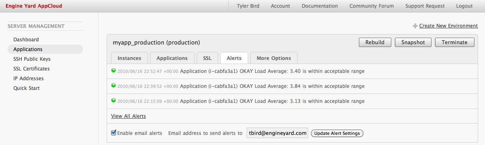

Monitoring
Engine Yard AppCloud includes the ability to monitor your instances for CPU usage, free space, etc. so you're aware of any extreme resource usage as they happen. Read more about Instance Monitoring and how to configure it for your environment.
We also recommend and offer an External Monitoring For a Rails App|external URL monitor checking service that will alert you if after two consecutive attempts if we've not been able to contact your URL with a HTTP 200 OK response.
Instance Monitoring
With Instance Monitoring, Engine Yard keeps an eye on your instance, records the alerts and optionally will email you.
Enable Email Alerts
NOTE: Email alerts are disabled by default.
- Click on the Alerts tab.
- Click on Enable email alerts.
- Specify the email you want to receive the alerts.
- Click on Update Alert Settings button.

Follow the above steps for each environment that you'd like to receive alerts for. For instance you may not need to receive alerts for your "staging" environment, but rather you do want alerts for your "production" environment.
View Alerts
NOTE: You can view the alerts, even if you have not specified an email to receive alerts.
Most Recent
See the three most current alerts. Click on the Alerts tab.

All Alerts
To see all recorded alerts click on the View All Alerts link.

Understand Alerts
Load Average
Something is consuming system resources. If this is sustained for a long period it can warrant getting on the instance and troubleshooting.
Current Thresholds:
- Warn: 4 x VCPU
- Fail: 10 x VCPU
For example: a 1 VCPU, the load would be 4.00 but a 5 VCPU, it would be 20.00.
IO-Wait
The instance is waiting for disk writes to complete before it can move to other operations.
Current Thresholds:
- Warn: 40% iowait
- Fail: 80% iowait
Swap Used
This alerts when the Swap space is getting low.
Current Thresholds:
- Warn: 128 MB Swap Used
- Fail: 384 MB Swap Used
Free Space on /data
You may not realize the instance is almost out of disk space until you get this alert. This alert will help give you the warning you need in advance.
Current Thresholds:
- Warn: 1 GB
- Fail: 256 MB
Free Space on /db
The database volume needs monitoring for free disk space as well.
Current Thresholds:
- Warn: 1 GB
- Fail: 256 MB
External Monitoring For a Rails App
Monitoring your site’s uptime is an important component to an overall strategy of keeping your site online and your visitors happy.
Install the FitterHappier Plugin
[[FitterHappier|http://github.com/atmos/fitter_happier/tree/master] is a Rails plug-in that provides actions for monitoring site and/or database availability. FitterHappier’s monitoring controller disables unnecessary Rails features, like sessions, layouts, and logging, for lightning-fast monitoring URIs.
To install FitterHappier, run the following commands from the project root of your Rails application:
cd vendor/plugins
git clone git://github.com/atmos/fitter_happier.git
For assurance, fire-up your application on your development machine and test the following URIs:
curl localhost:3000/fitter_happier
FitterHappier Site Check Passed
curl localhost:3000/fitter_happier/site_check
FitterHappier Site Check Passed @ Wed, 17 Dec 2008 14:27:47 -0800
curl localhost:3000/fitter_happier/site_and_database_check
FitterHappier Site and Database Check Passed @ Wed, 17 Dec 2008 14:27:57 -0800
Schema Version: 20081217141904
Update Your Production Environment
Once successfully installed, commit the plug-in to your application’s repository and deploy. Ensure deployment was successful by testing the same URIs from above.
Adding the URL to AppCloud
You can monitor one URL with Engine Yard AppCloud. We'd suggest the site_and_database_check for optimal coverage.
- Start at the Dashboard for Engine Yard AppCloud.
- For your environment, click on the Monitored URL tab.
- Fill out the "URL to monitor" field and click the Add URL button.
For example:
http://yoursite.com/fitter_happier/site_and_database_check
If the URL returns a 200 OK HTTP response, you'll get an email confirming your site is up. Now if the site goes down, or doesn't respond quickly, you'll be alerted via email!
The email is the account owner of the EY AppCloud account.